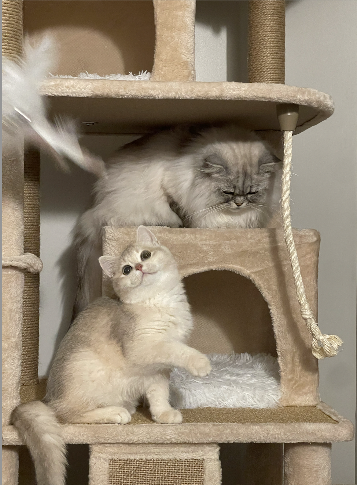

About meHi, my name is Yilin Yang. I am a new graduate student in DSAN. I was in Syracuse University during my undergraduated studies. I have chosen information management & technology and applied mathemathics as my undergraduated major. I am so interested in the data analytics in the WE media field. In DSAN, I would like to focus more on data visulization, NLP. I have learned a little about data visualization. When do some work about data analytics, data visulization and gather a story about data make me feel a sense of achievement and I have more energy to focus myself to devote into work. in my undergraduated studies, I am very interested in this field. I have taken introduction to machine learning and introduction to data visulization, these courses help me to locate what I really interested in and I want to choose this field as my future job. I have two lovely cats, I love them so much! It is very enjoyable when I come home and see my cats waiting for me. They are friendly and cute. My friends all like them and bring a lot of food to them. In my free time, I like staying with my cats, watching movies, and hanging out with my friends. I enojoy to try all kinds of food, having dinner with my friends and finding out fancy restaurants are very enjoyable moments to me. I also like pastries. Making desserts also helps me to feel comfortable and calm. I like all kinds of things for me to concentrate my self. I think this means I truly love these things. I enjoy sharing my desserts with my friends. |  | |
Academic Interests- IMPORTANT NOTE: - DATA ANALYTICS in WE media - Data visualization - Natural Laguage process |
Education2022: Master degree: Georgetown University 2018: Bachelor degree: Syracuse University 2015: Nanjing Foreign Language School Xianlin Campus |